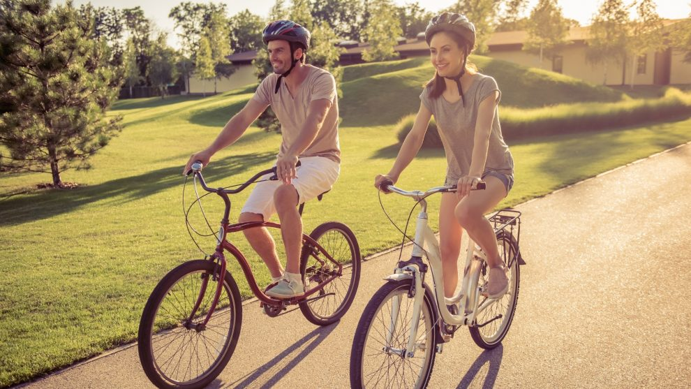
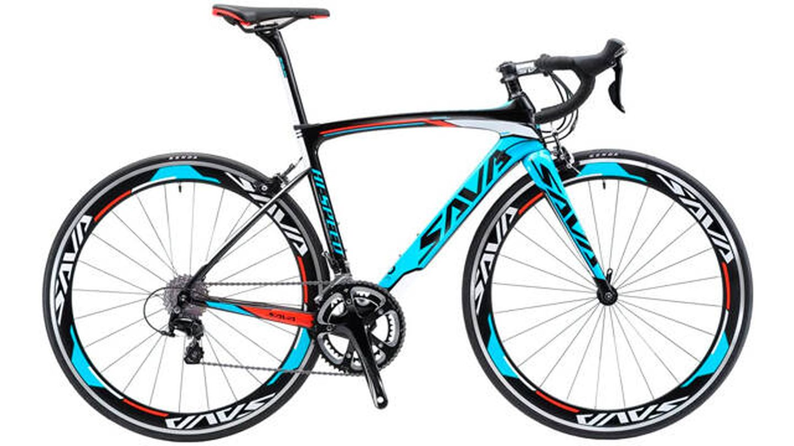
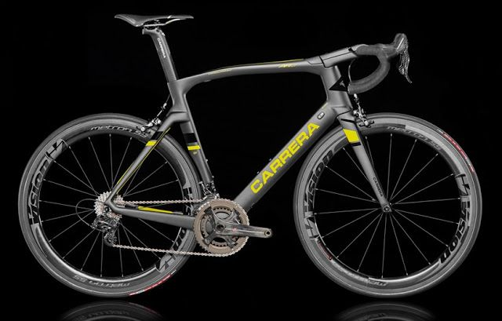
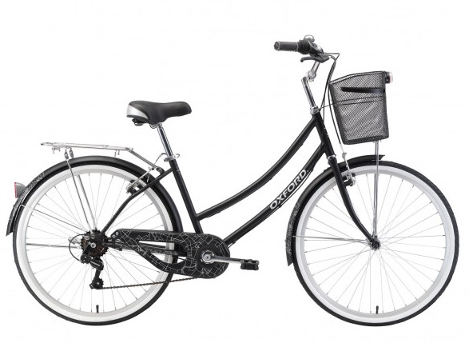

El mountain biking se diferencia del resto de las disciplinas del ciclismo de competición porque se desarrolla en entornos naturales.

De aluminio y triángulo posterior y horquilla de fibra de carbono, para aligerar el cuadro. Neumáticos estrechos alto rendimiento y manillar para una postura baja.

La bicicleta doméstica, también descrita como bicicleta de paseo, bicicleta urbana o bicicleta utilitaria, es una bicicleta diseñada para el transporte práctico.
La bicicleta es la única que tiene cadena para liberarte